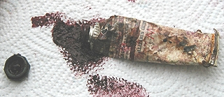

Nous nous permettrons d'élargir le constat : il s'agit d'un
coût de fabrication plus ou moins important se traduisant, dans les faits, chez les plus
professionnels par une baisse du taux de pigmentation et chez les moins honnêtes par
une baisse de qualité massive de tous les composants ayant parfois pour
résultat - inadmissible - l'impossibilité de mélanger deux couleurs de la
même gamme sans obtenir une véritable mélasse inutilisable.
On observe d'autres procédés relativement compréhensibles entraînant
aussi une baisse du coût de production comme par
exemple une fréquence plus basse des contrôles de qualité en usine. Cette logique peut cependant, elle aussi, aboutir à des aberrations
(fuites fréquentes avérées pour certaines gammes).
Autres pratiques plus compréhensibles :
* la substitution des couleurs les plus chères par
des imitations. Les onéreux cobalts et
cadmiums sont remplacés (nommément)
par des phtalos et autres
azoïques.
* la réduction des gammes de couleurs. Elle
permet de proposer une offre correspondant au gros de la demande, évitant
l'immobilisation prolongée de produits connaissant une demande plus rare.
Qualité et
transparence de l'information
Pour le reste, la question de la qualité des produits n'a pas de réponse univoque.
Bien souvent, c'est la transparence de l'information
fournie à l'acheteur qui fait la qualité car elle seule autorise une utilisation optimale des
produits.
Il
est possible d'énumérer des question de base très déterminantes pour
l'acquéreur :
* comment le fabricant nous informe-t-il de
la composition de son
produit,
mais aussi de sa nocivité éventuelle ?
* le fabricant nous offre-t-il une gamme de couleurs
miscibles entre elles,
et si non, ou si le produit n'est utilisable que sous certaines conditions
(ce qui peut être admissible),
nous le signale-t-il ?
* le fabricant nous propose-t-il un produit conforme à ce qu'il annonce :
vais-je vraiment acheter de l'aquarelle ou bien un fac-similé à la
dextrine ?
D'autres question peuvent se poser mais nous avons considéré que celles-ci
étaient particulièrement déterminantes en termes de qualité.
Comme nous le disions, la question de la miscibilité se pose avec acuité en entrée de
gamme (quand le fabricant ne parle pas encore de peinture "fine").
La question de la toxicité, elle, se pose à tous les niveaux. Elle est fonction de
la réglementation - sujette à variations périodiques - mais aussi de
l'honnêteté du fabricant. Si vous parvenez à détecter la composition d'un
produit (pourquoi pas à l'aide de notre
nomenclature en ce qui concerne les pigments ?), vous pouvez interroger les répertoires toxicologiques
internationaux en ligne (cf. adresses
en ligne dans les références) et vous renseigner sur leur comportement
intrinsèque et leurs incompatibilités
éventuelles avec d'autres produits.
Les liants
sont aussi un point capital
Certaines marques ont résolu d'adopter une totale transparence quant à la composition des produits
et particulièrement des liants - non sans la pression de
personnalités importantes du monde des Beaux-arts.
Cependant, nous sommes au regret de constater que certains fabricants
régressent sur ce plan, y compris en ce qui concerne leurs gammes extra-fines,
ce que ne peuvent que déplorer peintres, vendeurs, distributeurs et
intermédiaires.

Il est déplorable que des décisionnaires vraiment très mal informés
continuent à considérer ces produits et leurs acheteurs (de l'intermédiaire
au client final) sans le respect qui leur est nécessairement dû dès lors que
l'argument de la qualité supérieure est avancé (puisqu'il s'agit de gammes
"extra-fines"). Les laboratoires mettent au point des produits de
qualité - ce qui représente un investissement à rentabiliser - et le consommateur
les paye à bon prix. Il est
absolument nécessaire que celui-ci sache ce qu'il peut en attendre et comment il peut
s'en servir. Sans parler du détaillant censé donner au client fidèle une
explication au sujet de ce retour inattendu de l'opacité de l'information ! Il s'agit là de graves erreurs commerciales
qui signalent un état d'esprit ne pouvant susciter qu'un rejet.
Les
couleurs mono ou polypigmentaires
déterminant la qualité des gammes : un débat déplacé
La question des couleurs "monopigmentaires" est évoquée par
quelques peintres, enseignants et détaillants. La théorie veut qu'une couleur
issue d'un mélange préalable ait tendance à grisailler lors d'un mélange
ultérieur, ce qui pousse certains peintres à rechercher particulièrement les
couleurs monopigmentaires. Si cette pratique - peut-être un peu radicale si
elle est systématique - est assez fondée, par contre, en aucun cas
l'affirmation selon laquelle une gamme extra-fine peut être exclusivement
constituée de couleurs monopigmentaires n'est vraie ! En fait, on ne voit pas
comment une gamme de couleurs pourrait exclure des pigments polypigmentaires essentiels comme les terres d'ombre et de Sienne, la terre
verte, les ocres, etc. C'est tout simplement impossible !
Retour
début de page